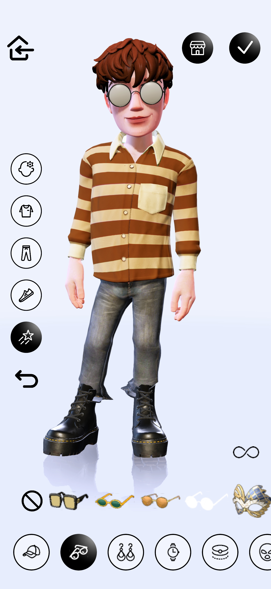
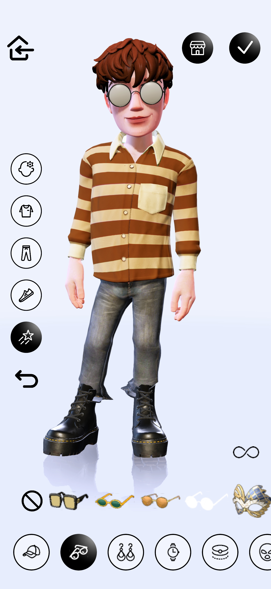

What is Genies?#
Genies is an avatar technology company.
We believe every human will need an avatar to represent themselves as the lines between the physical and digital worlds becomes increasingly blurred.
Avatar SDK#
Our avatars can fit into any user story.
Integrate the Avatar SDK into your app to enable your users to create their own cinematic avatars with millions of customizable options
The Avatar SDK is available in two versions:
| Avatar API | Avatar Creator SDK | |
|---|---|---|
| Avatar Creator | Inside Genies App | Inside your app |
| Avatar Stickers | Yes | Yes |
| Avatar Animations | Yes | Yes |
Avatar API#
The Avatar API allows developers to connect their users with their digital Avatars!
Users can access a library of Avatar Stickers and Avatar Animations and take their digital expressiveness to a new level.
In order to use the Avatar API features in your app, users must be logged into Genies.
Features#
The Avatar API has two main features: the Avatar Stickers and the Avatar Animations
With the Avatar API, you can:
- link a user with their Avatar Account
- generate Avatar Stickers as PNG
- generate Avatar Animations as MP4/Transparent MP4/GIF
Get started#
To get started, visit the Avatar API documentation.
Avatar Creator SDK#
The Avatar Creator SDK allows developers to bring the full Genies Avatar experience inside their native app!
Users can create their Avatar inside your app and access their Avatar Stickers and Avatar Animations libraries.
Features#
With the Avatar Creator SDK, you can:
- let the users create their Avatar inside your mobile app
- render Avatar Stickers as PNG
- render Avatar Animations as MP4/Transparent MP4/GIF
 

Get started#
To get started, visit the Avatar Creator documentation.
How to get started with the Avatar SDK#
Step one: Apply for a partner account#
To start using the Avatar SDK, you must first contact Genies and apply for a partner account at avatars@genies.com
Step two: Save your developer info#
In your partner approval process you'll receive an API Key that will be used to authenticate your SDK usage. The API Key does not expire unless expressly regenerated.
Step three: Start using the SDK#
After you got your Avatar SDK approval and your API Key, it's time to start integrating your project with the Avatar SDK.